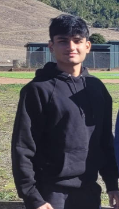
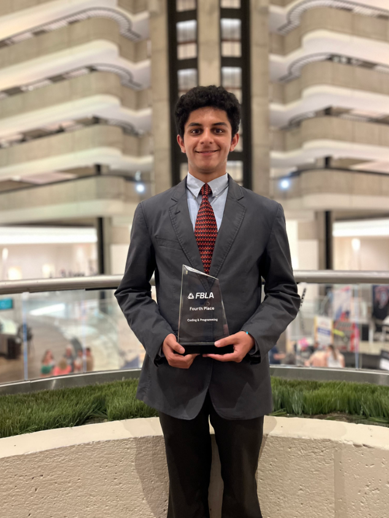

Our Team

Aditya Chandrasekhar is a junior at Dougherty Valley High School and is a math enthusiast. He has qualified for the AIME four times, the USAJMO twice, and enjoys learning college math. Aditya is also interested in physics and competitive programming. In his spare time, he enjoys playing basketball, listening to music, and playing with his dog.

Aarush Khare is a junior at Homestead High School who has been a part of the math contest community since 6th grade. He is a six-time AIME qualifier (highest AMC 10 and AMC 12 scores are both 132) and won the USAJMO in 2022 and 2023 with scores of 17 and 30. He is also interested in competitive programming and is currently a USACO Gold contestant. In his spare time, Aarush enjoys swimming, badminton, playing piano, and listening to music.